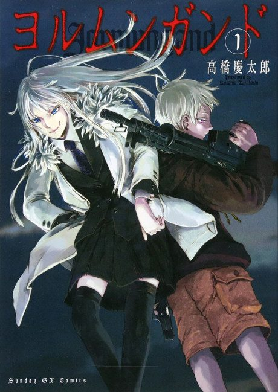

Anime
Anime
MangaJormungand
ヨルムンガンド
The anime takes the story to Done.
7.5AniList
—Animeter
24 ep2 seasons
Anime finished. Where does the manga pick up?
StatusFully adapted
Jormungand and Jormungand: Perfect Order adapt the whole manga, faithful right down to the final panel. There is no manga content left after the anime.